Introducing PCIe 2.0 Characterization Methodologies
Ahmed Tantawy, Verigy
Paper ID: 104382
Abstract
PCI-Express has been the main bus architecture for point to point interconnection between devices and the dominant architecture for PC interconnection. In 2006, PCI-Express 2.0 was introduced. With 2.0 comes a new set of test challenges due to the higher data rate of 5 GT/s (GigaTransfers/second) and the tighter signal integrity requirements. This imposes new criteria on ATE (Automated Test Equipment) to be able to meet those requirements; mainly higher data rate capabilities, better accuracy in the range of tens of picoseconds and new functionality to be able to characterize such interface.
In this paper we will introduce our methodology used to test a PCI-Express 2.0 device using Pin Scale HX boards (PSHX), which are capable of data rates up to 12.8Gbps. Using the functional modes of the PSHX as well as its built in capabilities for jitter injection, common mode modulation, and differential testing, along with the enhanced HighSpeedExtension APIs introduced in SmarTest; we are able to fully characterize PCI-Express 2.0. We will focus on some of the key testability enhancements in PCIe 2.0 that enable us to characterize it via loopback testing and compliance mode functionality. We will also present the PSHX capabilities that are used to achieve such tests and the ease of creating required tests with the use of the HighSpeedExtension APIs.
Introduction
With the introduction of high end gaming consoles, smart phones and faster computers, there is an increasing demand for bandwidth and higher speed applications especially in the consumer market. There is a need to achieve higher data rates in almost every aspect of technology with a simple architecture that is expandable and easy to implement. These needs pushed the technology industry to come up with new interconnection protocols that are characterized by their high speed, bandwidth, and simple implementation. These new architectures use serial signaling rather than the old parallel bus approach which is mainly done to simplify the implementation and relax the layout rules that used to constrain the parallel bus architecture. These new bus technologies are generally referred to as High-Speed Serial (HSS) buses with a dominant implementation using an embedded clocking scheme to further reduce the signaling requirements. Some of the most widely used protocols are PCIe (PCI Express), SATA (Serial ATA), FBDIMM (Fully Buffered DIMM) and XAUI; which all share similar architecture but have different protocol implementations.
This paper will focus on PCIe 2.0 devices and the new test challenges this standard presents. PCIe 2.0 reaches a new, higher data rate of 5 GT/s which requires tighter signal integrity requirements and adds more constraints on signal specs regarding jitter and timing margins than the original PCI Express interface. To achieve such higher data rates in PCIe 2.0, the standard introduces 2 different levels of Pre-emphasis for levels signaling and also new specs for PLL bandwidth and peaking. This all adds a new level of complexity and challenges for ATE (Automated Test Equipment) testing and requires new set of instruments and tools to be able to characterize such devices. However, the new PCIe 2.0 spec includes a couple of enhanced testability options that should help with the testing requirements. One of them is a more enhanced loopback capability and the other one is compliance mode testing. There is also added functionality to allow for levels and timing margining by easily accessing the Control Set Register (CSR) of the device. By taking advantage of such testability options and using our newest hi-speed instruments (PS3600 and Pin Scale HX) we are able to fully test and characterize PCIe 2.0 on Verigy's V93000 tester in a simple and straight forward implementation.
In this paper we will explain in more detail the two testing modes (LoopBack and compliance mode) and what types of tests can be achieved using them. We will also explain some of the challenges that are introduced by the extended Pre-emphasis levels and their impact and considerations while performing characterization. Then we will discuss the PSHX (Pin Scale HX) functional modes that are used to perform such tests and the added features in SmarTest for PSHX support that make it easier and faster to develop the required tests.
PCIe 2.0 Overview
PCI Express architecture is an I/O interconnect for peripherals in computing and communication platforms. It evolved from the PCI and PCI-X architectures that have been widely used in the computing industry for a long time. With the introduction of PCIe since 2003 it switched to a serial point to point architecture, where each device has a PCIe port that can communicate to only 1 PCIe port and in order to fan out to multiple ports it uses PCIe switches (Figure 1).
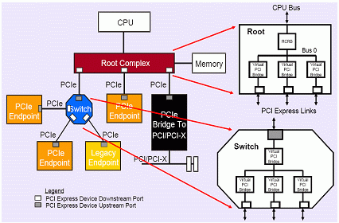
It is a packet based protocol; which means that each data payload is wrapped in a packet with a header and tail and other CRC information. It also uses 8b/10b encoding to transmit the data with embedded clock scheme. This will reduce its bandwidth to 80% of the 5GT/s (effectively 4GT/s) without accounting for the packet overhead. It can use either 1, 2, 4, 8, 16 or 32 lanes to form a full PCIe port, which means it can achieve bandwidth up to 32 GBytes/s with PCIe 2.0 running at 5 GT/s. It uses differential signaling for better signal quality and noise tolerance.
PCIe 2.0 is backward compatible with PCIe 1.1 and it is considered just an evolution with higher data rate. It also supports all the PCIe 1.1 functionality and data rate as well. The main differences for the 2.0 vs 1.1 specification are mainly related to the higher data rate and the signal requirements that come with it. The following are the main differences:
- Higher data rate 5 GT/s.
- Selectable de-emphasis levels for Tx equalization either -3.5 dB or -6 dB.
- Dynamic speed and link width changes for power saving and reliability.
- Added extra testability features such as enhanced compliance testing, easier loopback and level and timing margining.
- Jitter separation using Dual-Dirac model with Q-space transformation for bathtub curve fitting.
The above differences dictate some new requirements for the ATE and test methodology needed to characterize such devices. One of the added advantages for ATE is the enhanced testability features, in particular the easier loopback setup capability and the enhanced compliance mode testing. By using these two modes with the ATE environment it is possible to perform most of required tests for a full device characterization. It is also much easier to setup the device and to develop the test program with such capabilities and taking advantage of some of the operation modes of the PSHX instrument on the V93000 as well. In the next couple of sections we will explain in more detail both methods (loopback and compliance), which types of tests that can be performed with each one, and how it can be used with PSHX.
Loopback testing
This is the most convenient used method for testing PCIe especially for HVM (High Volume Manufacture) solutions. This is due to the ease of implementation and the lower Cost Of Test (COT) required. With the new PCIe 2.0 specs there are added testability features for Loopback. The main difference is that with PCIe 2.0, devices Do not have to achieve bit lock to perform loopback. Also most manufacturers will implement a DFT (Design For Test) solution for loopback using a BIST (Built-In Self Test) engine, which enables the device to be brought up in loopback mode through the setup of the Control Set Registers (CSR) using a low speed bus such as JTAG. Once the device is configured either by using the JTAG or by going through the LTSSM (Link Training and Status State Machine) (Figure 2) to reach loopback it can operate in 2 modes.
- The device generates PRBS patterns using a built in pattern generator based on DFT
implementation, which then gets transmitted on the Tx output and looped back either by a direct
connection, by a BERT (Bit Error Rate Tester), or by using ATE to the Rx input. It is then
compared to the known data stream and flagged for errors if any. Some devices will even have an
error counter on the Rx to act as a BER tester. The final Pass/Fail is then reported on a slow
speed bus (JTAG) by reporting a Pass/Fail bit or reporting the number of fails.
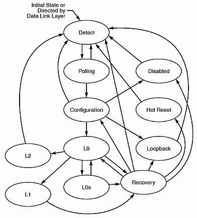
- The other approach is that the data stream is generated externally to the device by using a
BERT or ATE to generate a PRBS or other type of patterns. This is then driven into the device
Rx inputs and either looped back directly to the Tx output (Near-end loopback) or it can go
through the full path of the data (Far-End Loopback) by being tracked, de-seralized and looped
back to the Tx output to be seralized again and transmitted out. This route will test the rest
of the signal path inside the device but not the full logic layer as the data does not get
loaded in packets, scrambled or decoded (Figure 3).
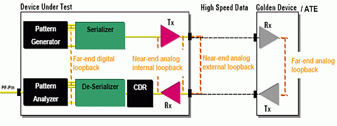
Using loopback testing the user can perform several characterization tests using ATE. Most of these are DC tests, voltage, and timing margining tests. This includes Rx sensitivity, Jitter Tolerance, impedance measurement and Common Mode modulation. On the Tx side it can cover Jitter measurement, Eye width, Eye height, voltage swing, voltage min/max and Common Mode measurement. Applying these measurements will usually cover most of characterization requirements, but it would fall short of covering Jitter Transfer, logical and functional testing beside a more detailed compliance set of measurements that might require more specific measurement with a per-bit comparison.
Compliance testing
This is one of the enhanced features for testability in PCIe 2.0. With the 2.0 specs, the Compliance Mode has been enhanced to support the new data rate and de-emphasis. In this mode the device will send out a predefined data pattern (Compliance Pattern or Modified Compliance Pattern) on all Tx pins. There is also a way to setup the device to send the compliance pattern in different modes:
- 2.5 GT/s with -3.5 dB mode.
- 5 GT/s with -3.5 dB mode.
- 5 GT/s with -6 dB mode.
With the above setup the user can basically test the device in all 3 different modes with functional data output, this is extremely useful in doing other measurements that require functional testing that are not covered by loopback. At the same time it is still relatively easy to program rather than trying to test in a full Mission Mode of the device. This is only intended for compliance test environment and not entered during normal operation and cannot be disabled for any reason.
The Compliance mode is part of the polling substate machine in the LTSSM (Figure 4). It is easily accessed after the detect state and as it moves to polling. After that it transitions to polling.active and then to polling.compliance depending on the training sequence registers bits setup. On each entry of polling.compliance it will cycle through the above settings for the compliance mode based on data rate and de-emphasis levels setting. This allows for easy access to such data rates and de-emphasis settings.
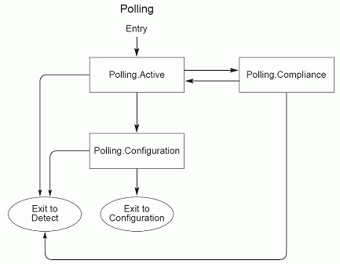
There is also another access method using the CSR (Control Set Registers) which can be accessed by slow speed bus (JTAG) to set the target link speed, enter compliance or modified compliance, compliance de-emphasis and transmit margin to set up the levels. This method would usually require a JTAG pattern from designers to set up the correct mode then the device would be ready to start generating the appropriate pattern.
Compliance Pattern
The compliance pattern consists of the sequence of 8b/10b Symbols K28.5, D21.5, K28.5, and D10.2 repeating. The compliance sequence is as follows:
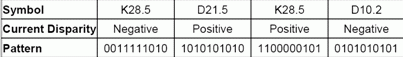
For any given device that has multiple Lanes, every eighth Lane is delayed by a total of four Symbols. A two Symbol delay occurs at both the beginning and end of the four Symbol Compliance Pattern sequence. This makes the compliance sequence on every eighth Lane be (D, D, K28.5, D21.5, K28.5, D10.2, D, D) where the delay symbol D is a K28.5. After the eight Symbols are sent, the delay Symbols are advanced to the next Lane and the process is repeated. An illustration of this process is shown below:
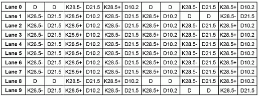
The content of the compliance pattern is defined to maximize ISI (Inter-Symbol Interference) on the lanes and crosstalk between lanes of links with a width beyond x1. Maximum ISI is achieved by using a character with the maximum run length of 5 bits that the 8b/10b codes allow in combination with a character containing the shortest run length of 1 bit. This is in conjunction with alternating between positive and negative disparity of the K28.5 character which ensures running both zeros and ones. Also to maximize crosstalk to be able to test for its effects, it is required to not have all lanes switching at the same time, but to have one victim lane to be stable for a few UIs while the rest of the lanes are switching. This is achieved by the insertion of the delay characters and cycling them around.
Modified Compliance Pattern
The Modified Compliance Pattern consists of the same basic Compliance Pattern sequence with one change. Two identical error status Symbols followed by two K28.5 are appended to the basic Compliance sequence of 8b/10b Symbols (K28.5, D21.5, K28.5, and D10.2) to form the Modified Compliance Sequence of (K28.5, D21.5, K28.5, D10.2, Error Status Symbol, Error Status Symbol, K28.5, K28.5). For any given device that has multiple Lanes, every eighth Lane is moved by a total of eight Symbols. Four Symbols of K28.5 occurs at the beginning and another four Symbols of K28.7 occurs at the end of the eight Symbol Modified Compliance Pattern sequence. After the 16 Symbols are sent, the delay Symbols are advanced to the next Lane and the process is repeated.
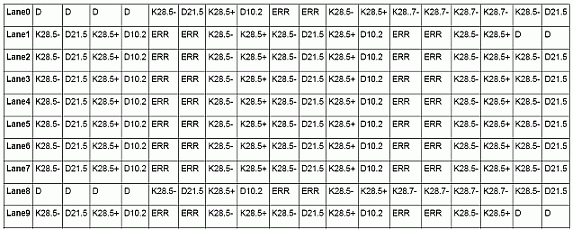
An illustration of the Modified Compliance Pattern is shown above.
The reason two identical error Symbols are inserted instead of one is to ensure disparity of the 8b/10b sequence is not impacted by the addition of the error status Symbol. All other Compliance pattern rules are identical (i.e., the rules for adding delay Symbols) so as to preserve all the crosstalk characteristics of the Compliance Pattern. The error status symbol is an 8b/10b data symbol, maintained on a per lane basis, and defined in 8-bit domain in the following way:
- Receiver Error Count (Bits 6:0) - Incremented on every Receiver error after the Pattern Lock bit becomes asserted.
- Pattern Lock (Bit 7) - Asserted when the Lane locks to the incoming Modified Compliance Pattern.
The Modified Compliance Pattern is usually used in more analytical testing as it is not suitable for Pass/Fail type of test due to the change of error count reported. It is sometimes called Receiver compliance pattern as the error count reported is the number of errors as seen by the receiver. This allows for BER testing.
Using the Compliance Mode testing in conjunction with the LoopBack testing provides an easy and complete way to characterize a PCIe 2.0 device. In these 2 modes we should be able to perform most of characterization tests in different data rates and de-emphasis levels. The only needed tools when using the Compliance testing is to have the ability to achieve Bit Lock and Byte Lock on the Compliance Pattern output to be able to synchronize with it on a lane by lane basis. Once that is performed it can be treated as any regular functional test and perform eye diagram measurements and jitter analysis as well as functional Pass/Fail testing.
De-emphasis effects on characterization
With the new PCIe 2.0 specifications there is an added level of de-emphasis of -6 dB to be able to support longer trace lengths with higher data rate of 5 GT/s. This is in addition to the default de-emphasis level of -3.5 dB. This new level of de-emphasis-- which is about 50% of voltage swing if measured by voltage scale (Figure 5) has a significant effect on the signal characteristics and how measurements are performed. This is apparent in doing timing and level measurements on the signal waveform.
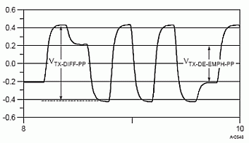
This variation in voltage levels from one bit to the other requires careful consideration for characterization as it results in 2 different definitions for Tr/Tf measurements based on which bit is being measured and whether it comes from a previous de-emphasized level or normal level. Rise and fall times are measured from the 20% to the 80% levels of the differential voltage level. For signaling with de-emphasis, the voltage thresholds corresponding to 20% and 80% vary depending on the voltage level of the previous UI and differ from those defined for full swing signaling. Only those transitions crossing the zero-crossing threshold need to meet Tr/Tf limits defined in the PCIe 2.0 specs. In Figure 6, there are three distinct thresholds corresponding to deemphasized transitions from high to low, low to high and full swing transitions in either direction. Tr and Tf must be validated for all four possible cases. To do this in ATE the user needs to use a data pattern that covers all four possible cases. The user also needs to use strobe testing with known expected data to be able to select which bits to test for and which ones to mask. The user has to have good knowledge of the pattern and may possibly have to do a single bit characterization, or if needed for a more accurate and comprehensive measurements, the user has to select all the bits that have the same transition profile. This would make this test not suitable for loopback testing where the pass/fail decision is based on the DUT received data and is generated by the device itself. In such loopback setup the user cannot really measure a meaningful Tr/Tf measurement as he/she gets the worst case swing of all the bits.
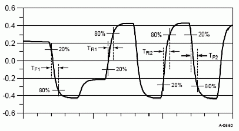
These same arguments apply for measuring the minimum pulse width. A minimum single pulse width TMIN-PULSE is defined in order to limit the amount of channel-induced jitter multiplication. Note that TMIN-PULSE is measured from transition center to the next transition center, and that the transition centers will not always occur at the differential zero crossing point (Figure 7). In particular, transitions from a de-emphasized level to a full level will have a center point offset from the differential zero crossing.
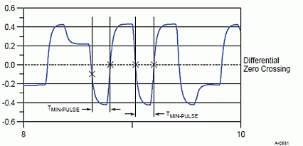
Figure 7 Minimum pulse width definition
The same challenges are also prevalent when performing voltage measurements where the user need to understand which levels are being measured and whether de-emphasis is enabled or not. In some cases it might be better to turn off de-emphasis while performing some of these measurements to eliminate any effects that are due to this. But in the same time that might affect the signal quality seen by the tester as the signal gets attenuated and the effects of ISI are added due to the load-board traces. Another note to remember is that the tester will not measure the same voltage and timing as it comes out of the device but will have its own effects on the signal quality due to any traces and relays in the signal path. This requires some correlation to bench setup to understand the differences and to be able to account for that. This should be taken into account when comparing to expected measurement values based on either device specs or bench setup.
Another effect of de-emphasis on the signal measurements is in the jitter analysis for the Tx signal. As having de-emphasis changes the zero crossing threshold for some bits based on there transition levels, this adds a timing offset for such bits. This timing offset usually accounts for some eye width closure (~10-17 ps error) when performing a regular eye diagram with a set threshold at zero differential crossing. This added error usually closes the eye on the right side and overestimates the eye on the left side (Figure 8).
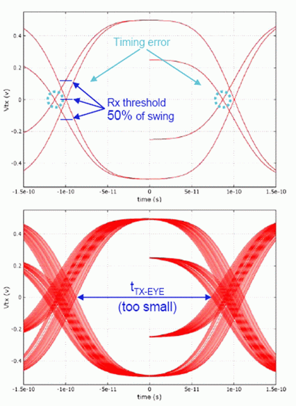
The channel effectively removes this de-emphasis jitter as the signal propagates through it and experiences more HF (High Frequency) losses. But part of that might still be seen by the tester when performing eye diagram measurements. There is an algorithm that can be used to remove such effect from the measurement but it is based on an empirical parameter that is measured directly from the eye. Also after applying such algorithm the remaining eye diagram is not suitable for level measurements, so it should be only used to correct the timing error but another measurement needs to be done to find the required voltage measurements.
Figure 9 shows the corrected eye diagram with the correction algorithm stated below it. The algorithm consisting solely of scale and shift operations; operates exclusively in the voltage domain. The high amplitude eye represents the jitter that would be observed without removing de-emphasis artifacts, while the low amplitude eye shows the effect of applying the above algorithm. Other algorithms yielding identical results may also be used. This algorithm yields only a correct eye width. Eye voltage should be obtained from other Tx waveforms. The deemp parameter listed in the algorithm is obtained empirically from the data record and will vary depending on whether a nominal de-emphasis of -3.5 dB or -6 dB is applied.
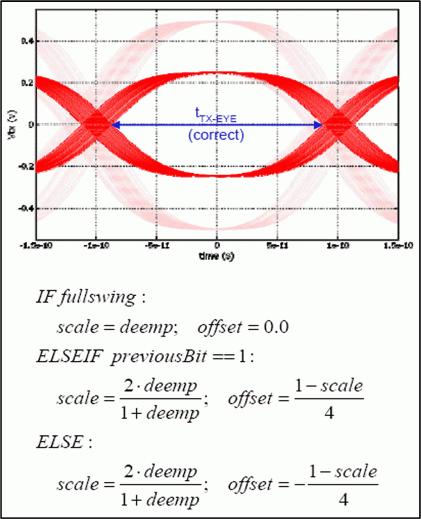
Pin Scale HX usage model
Using the PSHX (High-Speed Extension card) on the V93000 system adds a lot of capabilities in testing HSS devices. With its capable data rate of 12.8 Gbps and accuracy as good as +/- 7.5ps it is definitely capable of dealing with the new requirements for PCIe 2.0. There are a couple of main operating modes that are available to help with PCIe testing. These are: Loopback mode in both parametric and re-timed loopback, and the functional mode. Both modes are capable of jitter injection and common mode modulation.
Pin Scale HX Loopback
Every PSHX Lane can be connected in a direct loopback which would connect the comparator output on the receiver side to the driver input on the driver side of the instrument (Figure 10). By doing this it is possible to perform several characterization tests as it allows for margining both the receiver level compare threshold and the driver levels. With this ability we can perform eye height on the Tx side and receiver sensitivity tests on the Rx side of the device. Another advantage of this configuration is that it uses re-timing capability on the driver side, making it possible to separate the Tx jitter from Rx drive data. It also provides a much cleaner signal to the device based on the PSHX accuracy and not related to the received signal quality. This is in addition to the built-in jitter injection and common mode modulation capabilities which can also be applied to the drive data to perform jitter tolerance and common mode noise testing on Rx.
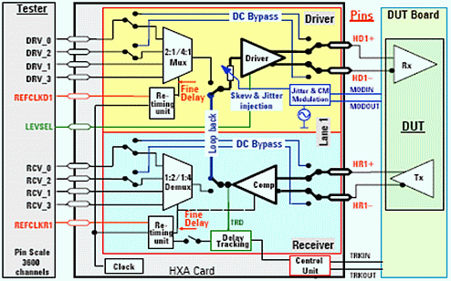
Another added feature that is not that common in loopback modes in ATE is the re-timing ability on the receiver side. This applies a sampling strobe based on the programmed period of the Tx data rate and is used to strobe the data for loopback. By using this capability and the built-in data tracking mode on the receiver it is possible to perform timing measurements on the Tx side in loopback mode. This enables such measurements as eye width and jitter measurements.
Pin Scale HX Pattern Mode
In this mode the PSHX acts as a regular drive and receive instrument with its 12.8Gbps capabilities, jitter injection, common mode modulation and tracking modes. Using this mode the user can do regular functional testing as well as dedicated HSS compliance tests. This is also used to perform jitter measurements using the available Jitter Tool Box (JTB).
Using this pattern mode we can perform the compliance testing for PCIe 2.0. In this mode the device is set in compliance mode either through JTAG or by basically providing the needed 100 ohm cross termination for the PCIe Tx output to be able to do a detect and move to polling state and enter compliance mode. Once in compliance mode the device will start sending compliance pattern indefinitely. In this case we can program the tester receiver with the correct expect data based on the compliance pattern and we can test directly for Pass/Fail status. This mode can also be used in loopback where we program the expected data the same as the output for the loopback pattern, but some synchronization needs to be done to be able to align and account for the device latency for loopback.
With the ability to compare to expected data we can perform most of the needed characterization such as rise/fall time measurements, jitter measurements, eye diagrams, levels measurements and timing measurements. Combining this with our loopback solution enables us to cover most of the needed characterization tests to achieve compliance for PCIe 2.0.
Pin Scale HX software interface
With the added support for PSHX in SmarTest software starting from version 5.4 there have been several tools added. One of the main tools is the addition of the Eclipse platform which has a more updated interface to debug test methods and eases the process for developing new test method code. There is also the addition of a hardware viewer through which the user can view and modify the full programming and setup of the PSHX card as a resource or per lane. There is also the new set of APIs to support the PSHX functionality which makes it quite easy to write any required tests as needed. This new set of APIs has the ability to either set or get any setup or measurement of the PSHX hardware in per resource, per lane, or per pin access modes. Using this set of APIs we were able to develop a full suit of tests for the above discussed characterization for PCIe 2.0, and were able to perform the required measurements as needed.
Summary
PCIe 2.0 adds a new layer of complexity and requirements especially for the ATE environment. Although it was designed with testing in mind by enhancing the testability features, it is still considered a challenge for the slowly adapting ATE technology. The added enhancements of easier loopback setup and fully covered compliance mode enables us to characterize the PCIe devices to a great extent, but that still leaves a gap for full functional mission mode testing that might be required in certain debug and failure analysis environments. Even with the testability options in PCIe 2.0, it requires high end instruments that are designed specifically to cover the HSS market. With the PSHX's superior functionality, data rate, and accuracy, it is capable of meeting production test needs as well as debug and characterization. The use of this card is further enhanced by its ease of use in setup and programming. Finally, with a data rate up to 12.8 Gbps, the PSHX is able to test not only the current generation of HSS devices, but should have sufficient headroom to test the next generation as well.
All measurements presented in this paper were performed on an V93000 SOC scalable platform architecture equipped with PS3600/PSHX digital high-speed pin electronic cards and are available upon request through our sales and support team.
References
- PCI-Express Base Specification Revision 1.1
- PCI-Express Base Specification Revision 2.0
- PCI-SIG DevCon'07 "PCI-Express 2.0 PHY Electrical Sub-block" Jeff Morriss and Gerry Talbot.
- PCI-SIG DevCon'07 "PCI-Express 2.0 PHY Logical Sub-block" Debendra Das Sharma.
- Euro DesignCon'04 "Enabling the PCI-Express ramp - ATE based testing of PCI-Express architecture" Hubert Werkmann.
- PCI-SIG DevCon'07 "PCI-Express Basics" Ravi Budruk.
- PSHX training manual 2007.
Biography
Ahmed Tantawy has been a Senior Application Engineer with Verigy since 2006 with a focus on supporting High-Speed Serial (HSS) applications. Prior to joining Verigy, he was with Schlumberger and Credence as an Application Engineer, supporting several customers in the Bay Area since 2001 for several digital applications with a focus on characterization and design validation. Ahmed holds a Bachelors degree in Electrical Engineering from Ain Shams Univ. in Cairo, Egypt and a Masters degree in Electrical Engineering with a focus on VLSI Design and Test from Santa Clara University in California.